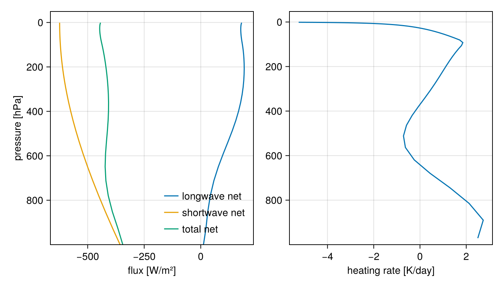
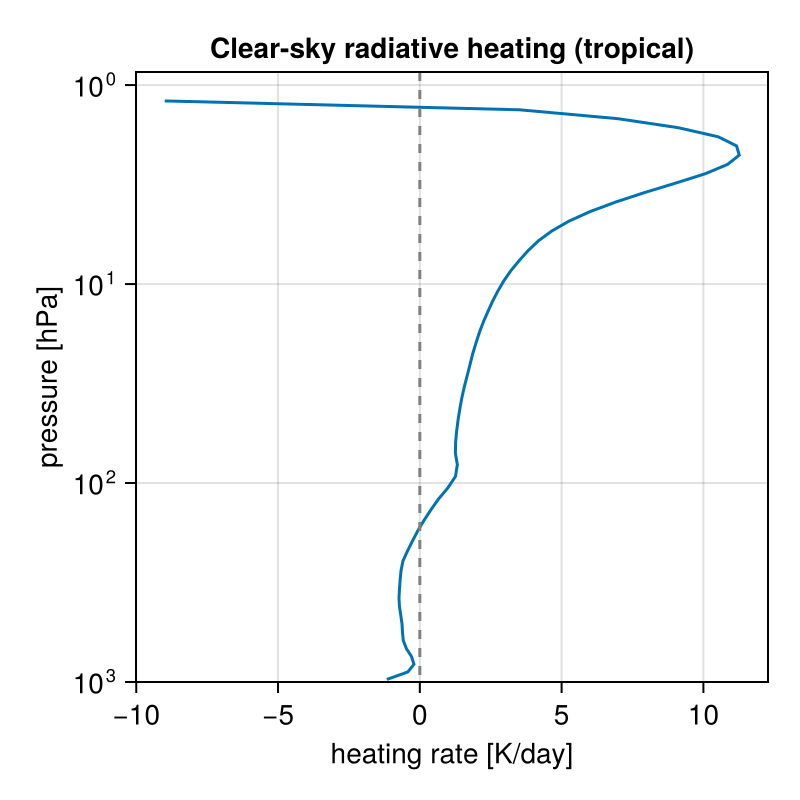

A first radiation calculation
This tutorial computes radiative fluxes and heating rates with RRTMGP.jl in a few lines, first for a gray (single-band) atmosphere and then with the full RRTMGP correlated-$k$ gas optics. The gray model is analytic, and the gas-optics lookup tables download automatically.
using RRTMGP
using CairoMakieAn idealized atmospheric column
Radiation needs an atmospheric state to act on: temperatures, pressures, and composition. Each standard_atmosphere is an analytic clear-sky column, loosely following the Air Force Geophysics Laboratory reference climatology (Anderson et al. [2]): a two-segment temperature profile with constant tropospheric lapse rate up to the tropopause, then a warming stratosphere, hydrostatic pressure, water vapor decaying exponentially from the surface with a floor in the stratosphere, an ozone layer peaked near 30 km, and present-day well-mixed gases (CO₂, CH₄, N₂O, …). The three kinds — :tropical, :midlatitude_summer, and :subarctic_winter — differ in surface temperature, tropopause height, and moisture, from warm and moist to cold and dry. It needs no input data:
profile = RRTMGP.standard_atmosphere(Float64; kind = :tropical, nlay = 60);Gray radiation
The gray atmosphere replaces the full spectral dependence of gas optics by a single prescribed longwave optical-thickness profile, the workhorse of idealized-climate studies. RRTMGP's default follows Frierson et al. [3] and O’Gorman and Schneider [4]: the vertical longwave optical depth blends a linear and a quartic dependence on the normalized pressure $σ = p/p_s$,
\[\widehat{\tau}(σ) \propto f_\ell\,σ + (1 - f_\ell)\,σ^4,\]
so it stays finite aloft and thickens toward the surface. Because the gray equations are analytically tractable, the semi-gray column also has a closed-form radiative-equilibrium solution, $T(\widehat{\tau}) = T_e\,[(1 + D\widehat{\tau})/2]^{1/4}$ with diffusivity factor $D$; RRTMGP's test suite integrates the gray longwave solver to equilibrium and checks the computed temperatures against the analytic radiative-equilibrium balance $\sigma T^4 = (F^\uparrow + F^\downarrow)/2$. Solving the column with gray optics takes one call (no lookup tables are needed; the temperatures are the profile's):
out = RRTMGP.solve(profile; method = RRTMGP.GrayRadiation());The result is a RadiationOutput whose fields are (nlev, ncol) fluxes in W/m² plus the heating rate in K/s. Plot the longwave and shortwave net fluxes and the heating rate against pressure:
p_lev = Array(RRTMGP.level_pressure(out.solver)) ./ 100 # [hPa]
p_lay = Array(RRTMGP.layer_pressure(out.solver)) ./ 100
fig = Figure(size = (700, 400))
ax1 = Axis(
fig[1, 1];
xlabel = "flux [W/m²]",
ylabel = "pressure [hPa]",
yreversed = true,
limits = (nothing, nothing, nothing, 1000),
)
lines!(ax1, Array(out.lw_net)[:, 1], p_lev[:, 1]; label = "longwave net")
lines!(ax1, Array(out.sw_net)[:, 1], p_lev[:, 1]; label = "shortwave net")
lines!(ax1, Array(out.net)[:, 1], p_lev[:, 1]; label = "total net")
axislegend(ax1; position = :rb, framevisible = false)
ax2 = Axis(
fig[1, 2];
xlabel = "heating rate [K/day]",
yreversed = true,
limits = (nothing, nothing, nothing, 1000),
)
lines!(ax2, 86400 .* Array(out.heating_rate)[:, 1], p_lay[:, 1])
fig
Configuring the gray optical depth
The optical-thickness model is a keyword argument. The Schneider [5] form exposes a single pressure exponent $α$ through $\widehat{\tau}(p) = d_0\, (p/p_s)^α$, which controls how the absorber is distributed with height: $α = 1$ for a well-mixed absorber (constant mixing ratio, no pressure broadening), larger $α$ for one concentrated near the surface. Change it in one line:
using RRTMGP.AtmosphericStates: GrayOpticalThicknessSchneider2004
out_wellmixed = RRTMGP.solve(
profile;
method = RRTMGP.GrayRadiation(),
optical_thickness = GrayOpticalThicknessSchneider2004(Float64; α = 1.0),
);
println("surface net flux, α = 1: ",
round(Array(out_wellmixed.net)[1, 1]; digits = 1), " W/m²")surface net flux, α = 1: -505.3 W/m²(solve_gray is a related one-liner that builds an analytic, latitude-dependent gray column internally instead of taking a profile.)
The longwave net flux converges toward the outgoing longwave radiation at the top; the corresponding heating rate is the radiative cooling that convection balances in the troposphere.
Clear-sky gas optics
For the real gas optics, load NCDatasets (which activates RRTMGP's lookup-table support, downloading the tables on first use) and solve the same column with the full correlated-$k$ treatment:
using NCDatasets
out_cs = RRTMGP.solve(profile);out_cs.solver.lookups holds the parsed lookup tables; pass them back via solve(profile; lookups) to skip the NetCDF read when solving many profiles. The outgoing longwave radiation (OLR) is the upwelling longwave flux at the top level:
olr(kind, lookups) = Array(
RRTMGP.solve(
RRTMGP.standard_atmosphere(Float64; kind);
lookups,
).lw_up,
)[end, 1]
lookups = out_cs.solver.lookups
for kind in (:tropical, :midlatitude_summer, :subarctic_winter)
println(rpad(kind, 22), round(olr(kind, lookups); digits = 1), " W/m²")
endtropical 282.7 W/m²
midlatitude_summer 281.3 W/m²
subarctic_winter 201.6 W/m²Warm, moist columns emit more (though not proportionally to $σT_s^4$, because water vapor absorbs part of the surface emission).
The effect of doubling CO₂
Because the profile carries its well-mixed gases as a dictionary, changing the CO₂ concentration is one line. Comparing the OLR at fixed temperature quantifies the instantaneous radiative forcing at the top of the atmosphere:
profile_2x = RRTMGP.standard_atmosphere(Float64; kind = :tropical, nlay = 60)
profile_2x.well_mixed_vmr["co2"] = 2 * profile.well_mixed_vmr["co2"]
out_2x = RRTMGP.solve(profile_2x; lookups)
ΔOLR = Array(out_2x.lw_up)[end, 1] - Array(out_cs.lw_up)[end, 1]
println("ΔOLR from doubling CO₂: $(round(ΔOLR; digits = 2)) W/m²")ΔOLR from doubling CO₂: -3.95 W/m²Doubling CO₂ reduces the OLR by a few W/m², creating the energy imbalance that forces the climate to warm. How much the surface must warm to restore balance is the subject of the radiative-convective equilibrium tutorial, which turns this experiment into Manabe's classic climate-sensitivity calculation.
The clear-sky heating rate
The clear-sky heating-rate profile shows the stratospheric heating by ozone absorption of shortwave radiation:
hr = 86400 .* Array(out_cs.heating_rate) # [K/day]
p_cs = Array(RRTMGP.layer_pressure(out_cs.solver)) ./ 100
fig2 = Figure(size = (400, 400))
ax3 = Axis(
fig2[1, 1];
xlabel = "heating rate [K/day]",
ylabel = "pressure [hPa]",
yscale = log10,
yreversed = true,
limits = (nothing, nothing, nothing, 1000),
title = "Clear-sky radiative heating (tropical)",
)
lines!(ax3, hr[:, 1], p_cs[:, 1])
vlines!(ax3, [0.0]; color = :gray, linestyle = :dash)
fig2
Where to go from here
- The radiative-convective equilibrium tutorial builds a single-column climate model from these pieces.
- The Functional core page shows what
solveandsolve_grayassemble internally (the explicit states andsolve_lw!/solve_sw!kernels). - The getter contract documents how a host model exchanges data with an
RRTMGPSolverin place. - How to get per-band (spectral) fluxes shows how to retain the band-by-band fluxes behind these broadband results.
This page was generated using Literate.jl.